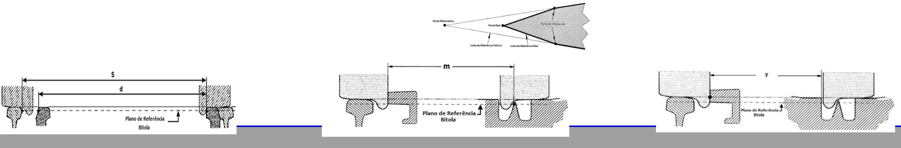

INSPEÇÃO DE APARELHOS DE MUDANÇA DE VIA
Ficha vertical no ecossistema Manutenção Hub, com estrutura AMV/MPS e imagem IP.
Linha do Oeste
PK 21+190 a 191+197
1. Identificação do AMV ABRIR
MPS — Inspeção MVS e Encravamentos
Separadores hierárquicos conforme a filosofia do template.
Esquema técnico de medições AMV / MPS

Apoio visual para medições: cota d, cota m, cota y, bitola S e abertura/guiamento, conforme templates IP.MOD.052 e IP.MOD.057.
Medições na Grade de Agulhas ABRIR
Medições na Zona da Cróssima ABRIR
Medições principais do AMV ABRIR